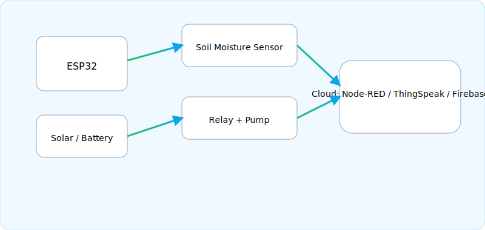

แผนผังระบบรดน้ำอัตโนมัติ

ESP32 รับค่าความชื้นจากเซนเซอร์ ควบคุมรีเลย์/ปั๊ม และส่งข้อมูลขึ้น Cloud (Node-RED / ThingSpeak / Firebase) เพื่อดูข้อมูลและสั่งงานระยะไกล
แดชบอร์ดสถานะ (ข้อมูลจริงจาก ThingSpeak)
โหมด: AUTO • ช่วงเป้าหมาย: ความชื้น 35–45%
| พารามิเตอร์ | ค่า | หมายเหตุ |
|---|---|---|
| ความชื้นในดิน | -- % | field1 จาก ThingSpeak |
| สถานะปั๊มน้ำ |
OFF
|
field2 (0=OFF, 1=ON) |
| โหมดควบคุม | AUTO | field3 จาก ThingSpeak |
การเชื่อมต่อข้อมูลจริง
หน้านี้ดึงข้อมูลจริงจาก ThingSpeak Channel ID 3069958
อัปเดตทุก 15 วินาที (Read API Key: TX73L46FK87FRFGQ)